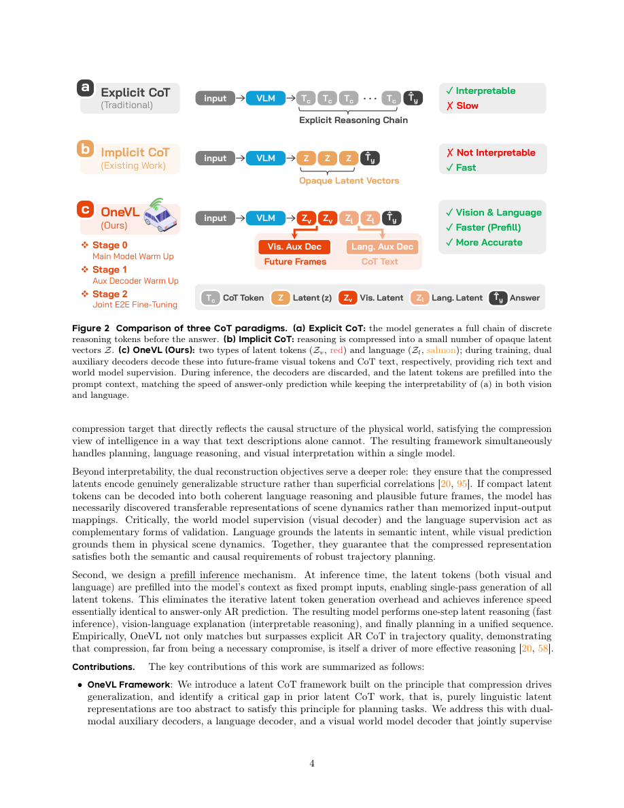

#1
★ 8/10
OneVL: One-Step Latent Reasoning and Planning with Vision-Language Explanation
OneVL：基于视觉-语言解释的单步潜在推理与规划

图 Figure · Page 4 of paper
🎯 用语言+视觉双监督压缩推理为潜在token，首次让隐式CoT超越显式CoT
OneVL compresses chain-of-thought reasoning into latent tokens supervised by both language and visual world-model decoders, achieving explicit CoT accuracy at single-step inference speed.
| 维度 | 中文 | English |
|---|---|---|
| ❓ 待解决 的问题 |
在自动驾驶中，思维链（CoT）推理能显著提升轨迹预测精度，但逐步生成推理过程太慢，无法满足实时需求。现有的"潜在CoT"方法试图把推理压缩到隐藏状态来提速，但效果始终不如显式CoT。根本原因在于：纯语言构成的潜在表征只捕捉了符号化的抽象信息，而非驾驶场景中真实的因果动态规律。 | Chain-of-Thought (CoT) reasoning greatly improves trajectory planning in autonomous driving VLA models, but generating reasoning step-by-step is too slow for real-time use. Existing "latent CoT" methods try to compress reasoning into hidden states to speed things up, but they consistently underperform compared to explicit, verbose CoT. The root cause is that purely language-based latent representations capture only symbolic abstractions, missing the true causal dynamics of the physical driving world. |
| 💡 解决 的亮点 |
• **双辅助解码器监督**：语言解码器重建文本CoT，视觉世界模型解码器预测未来帧，两者联合迫使潜在token同时捕捉符号抽象和物理因果动态。 • **单步并行推理**：测试时丢弃所有辅助解码器，所有潜在token一次并行填充，速度与"仅输出答案"模式持平，零推理开销。 • **三阶段渐进训练**：依次对齐轨迹、语言、视觉目标，保证联合优化稳定不崩溃。 | • **Dual auxiliary decoder supervision**: A language decoder reconstructs text CoT while a novel visual world model decoder predicts future video frames, jointly forcing latent tokens to capture both symbolic and causal physical dynamics. • **Single-step parallel inference**: At test time, all auxiliary decoders are discarded and latent tokens are prefilled in one parallel pass — matching the speed of answer-only prediction with no reasoning overhead. • **Three-stage training pipeline**: Progressive alignment of latents with trajectory, language, and visual objectives ensures stable joint optimization without collapse. |
| 🧪 实验 内容 |
作者在四个自动驾驶基准数据集上评估了OneVL，与显式CoT VLA基线（生成完整推理文本）和已有潜在CoT方法进行对比。评估指标包括轨迹规划精度（如L2位移误差、碰撞率）和推理延迟，重点考察实时部署场景下的精度-速度权衡。 | The authors evaluated OneVL on four autonomous driving benchmarks, comparing against both explicit CoT VLA baselines (which generate full reasoning text) and prior latent CoT methods. Baselines include standard autoregressive CoT VLA models and previous latent reasoning compression approaches. Evaluations measure trajectory planning accuracy (e.g., L2 displacement error, collision rate) and inference latency, capturing the accuracy-speed trade-off central to real-time deployment. |
| 📊 实验 结果 |
OneVL在全部四个基准上首次实现潜在CoT方法超越显式CoT基线，达到当前最优规划精度，同时推理延迟与"仅输出答案"模式持平。测试阶段无自回归推理开销，证明语言+世界模型双重监督能产生比逐步推理更紧凑、更可泛化的潜在表征。（各基准具体L2误差降幅、碰撞率等详细数字见完整论文。） | OneVL is the first latent CoT method to surpass explicit CoT baselines across all four benchmarks, achieving state-of-the-art planning accuracy while matching answer-only (non-reasoning) inference latency. It delivers this performance with no autoregressive reasoning overhead at test time, demonstrating that dual language + world-model supervision enables tighter, more generalizable latent compression than verbose step-by-step reasoning. (Specific per-benchmark numerical figures such as exact L2 error reductions or collision rate drops are detailed in the full paper.) |
| 🏁 结论 | OneVL证明：当潜在token同时受语言重建和视觉未来帧预测双重监督时，潜在CoT能够在自动驾驶规划中超越显式CoT，以"仅答案"推理速度实现最优精度。这确立了一个新范式：更丰富、具有因果基础的潜在监督——而非更多的推理token——才是VLA规划泛化能力提升的关键。 | OneVL proves that latent CoT can surpass explicit CoT in autonomous driving planning when latent tokens are supervised by both language reconstruction and visual future-frame prediction, achieving state-of-the-art accuracy at answer-only inference speed. This establishes a new paradigm: richer, causally-grounded latent supervision — not more reasoning tokens — is the key to better generalization in VLA planning. |
| 🔗 论文 链接 |
arXiv: 2604.18486v1 · 📥 PDF | |
⚙️ Method · 方法详解
OneVL构建了一个统一的VLA与世界模型框架。不同于逐步生成推理token，它将整个推理过程压缩为少量紧凑的潜在token。训练时，这些潜在token受两个辅助解码器监督：语言解码器负责重建完整的文本思维链，视觉世界模型解码器负责预测未来驾驶场景帧——两者共同确保潜在空间编码了真实的因果路面动态（道路几何、智能体运动、环境变化）。三阶段训练流程依次引入轨迹、语言、视觉监督信号，保证稳定收敛。推理时只使用主规划头，所有潜在token一次并行前向传播，无自回归开销。
OneVL introduces a unified VLA and World Model framework. Instead of generating reasoning tokens autoregressively, it compresses the entire reasoning process into a small set of compact latent tokens. These latents are supervised during training by two auxiliary decoders: a language decoder that reconstructs the full text chain-of-thought, and a visual world model decoder that predicts future driving scene frames — ensuring the latent space encodes true causal road dynamics (geometry, agent motion, environmental change). A three-stage training pipeline first trains trajectory prediction, then adds language supervision, and finally adds visual world model supervision for stable convergence. At inference, only the main planning head is used, prefilling all latent tokens in a single parallel forward pass with no autoregressive overhead.
📐 Key Formulas · 关键公式
\[\mathcal{L} = \mathcal{L}_{\text{traj}} + \lambda_1 \mathcal{L}_{\text{lang}} + \lambda_2 \mathcal{L}_{\text{visual}}\]
💡 总训练损失由三部分组成：轨迹预测损失、语言CoT重建损失、视觉未来帧预测损失，后两者由权重系数λ₁、λ₂平衡。
The total training loss combines trajectory prediction loss, language CoT reconstruction loss, and visual future-frame prediction loss, balanced by weights λ₁ and λ₂.
🌟 Why It Matters · 为什么重要
本文直接解决了推理增强型自动驾驶模型中长期存在的精度-延迟两难困境，揭示了世界模型基础是高效潜在推理的关键缺失要素。更广泛地看，双解码器监督策略为任意多模态规划领域中压缩思维链推理提供了可迁移的通用方案。
This work directly resolves the long-standing accuracy-latency dilemma in reasoning-augmented autonomous driving models, showing that world-model grounding is the missing ingredient for effective latent reasoning. More broadly, the dual-decoder supervision strategy offers a transferable blueprint for compressing chain-of-thought reasoning in any multimodal planning domain beyond driving.